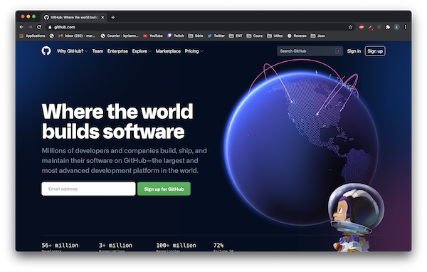
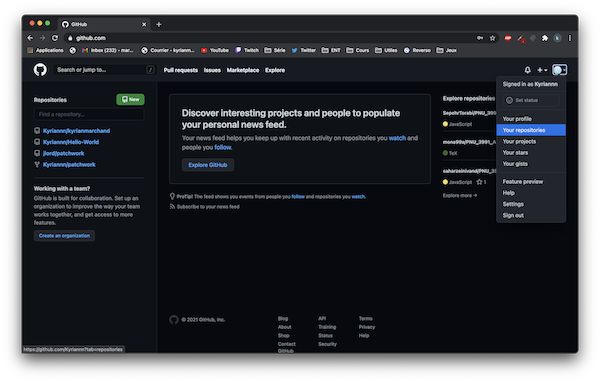
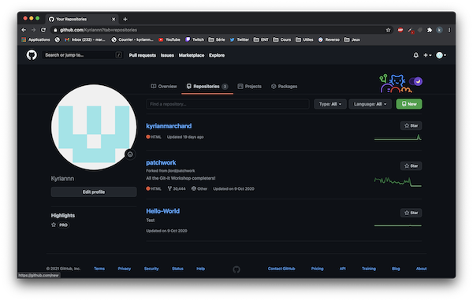
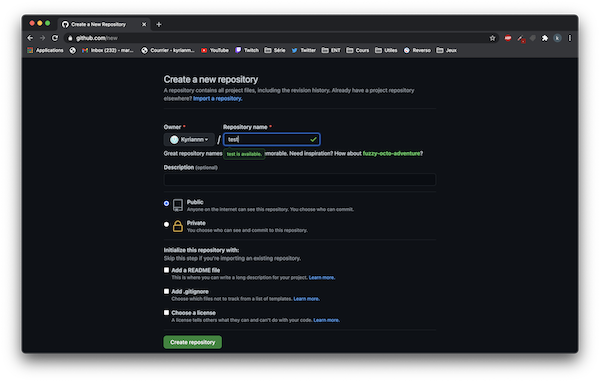
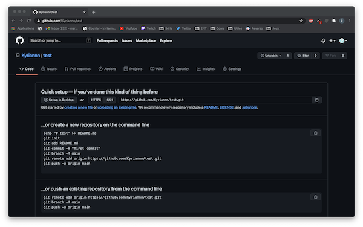
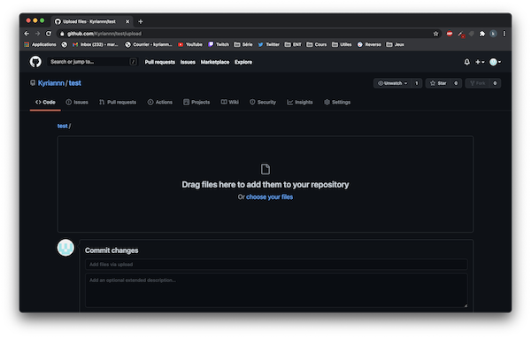
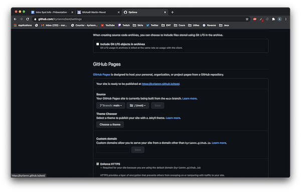

GitHub Pages est un service qui crée les sites internets a partir de vos répertoires GitHub, et qui permet ainsi de présenter votre portfolio, projets ,etc. GItHub Pages est gratuit et simple à utiliser
Se rendre sur Github. Si vous disposez d’un compte connectez vous sinon créez en un.
Après s'être connecté à son compte, cliquer sur son icône en haut à droite puis se diriger vers “Your repositories” .
Créer son répertoire en cliquant sur “new”.
Remplir la page de création puis terminer.
Si vous disposez déjà de fichier vous devez les uploader en cliquant sur “uploading an existing file” ou sinon vous pouvez directement en créer un en allant sur "creating a new file”.
Pour un site web, déposer votre Index.html et votre/vos pages CSS (.css). Quand vos fichiers sont téléchargés, se rendre sur “settings”.
Descendre de la page, jusqu’au paragraphe GitHub Pages, sélectionner la branche main et save. Vous devez récupérer le lien de votre page web au-dessus. Si une erreur survient en se dirigeant sur la page, pas d’inquiétude il suffit d’attendre un peu.
